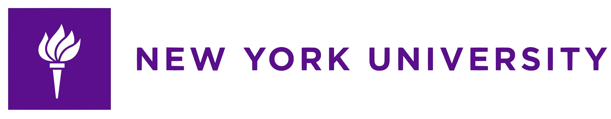
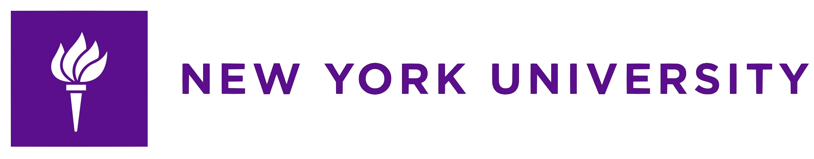

About Me
Hello! My name is Laureni. I’m a Full Stack Developer seeking a new challenging career. My years of experience in sales and marketing taught me how to listen to client's needs and project management; I'm looking to leverage these skills for my next role. I am a hardworking individual passionate about approaching programming challenges from different angles and I am always eager to learn new skills and advance my knowledge base.
I've worked on solo projects integrating responsive web design practices and in a group incorporating various APIs. I’m completing Rutger's Full Stack Bootcamp, curriculum includes the following technologies:
In my personal time I like to bake, ride my bike, and play Animal Crossing. Also, I have a BA in Italian literature from New York Univeristy so I love practicing my Italian whenever I can.
 
